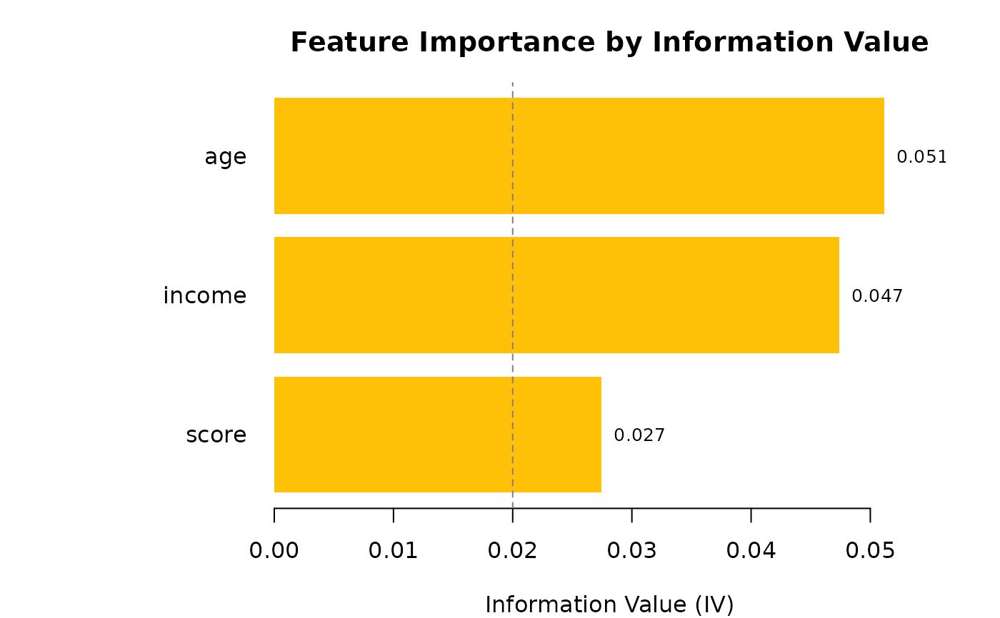
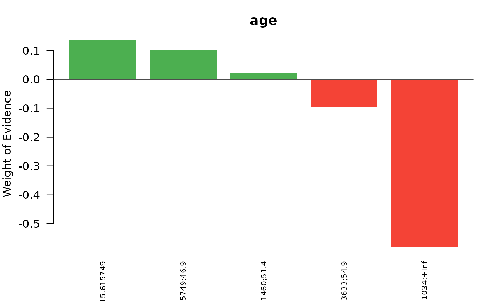
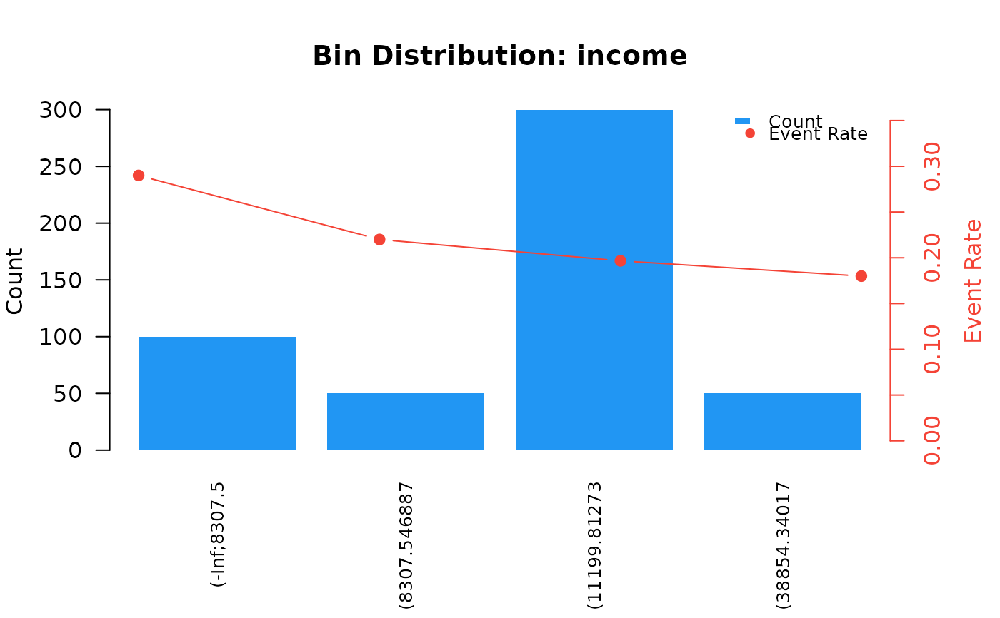

Creates publication-quality visualizations of optimal binning results. Supports multiple plot types including IV ranking charts, WoE profiles, and bin distribution plots. All plots follow credit scoring visualization conventions.
Arguments
- x
An object of class
"obwoe".- type
Character string specifying the plot type:
"iv"Information Value ranking bar chart (default)
"woe"Weight of Evidence profile for selected features
"bins"Bin distribution (count and event rate)
- feature
Character vector of feature names to plot (for
"woe"and"bins"types). IfNULL, uses top 6 features by IV.- top_n
Integer. For
"iv"type, number of top features to display. Default is 15. Set toNULLto display all.- show_threshold
Logical. For
"iv"type, draw horizontal lines at IV thresholds (0.02, 0.10, 0.30)? Default isTRUE.- ...
Additional arguments passed to base plotting functions.
Details
Plot Types
IV Ranking (type = "iv"):
Horizontal bar chart showing features ranked by Information Value.
Colors indicate predictive power classification:
Gray: IV < 0.02 (Unpredictive)
Yellow: 0.02 <= IV < 0.10 (Weak)
Orange: 0.10 <= IV < 0.30 (Medium)
Green: 0.30 <= IV < 0.50 (Strong)
Red: IV >= 0.50 (Suspicious)
WoE Profile (type = "woe"):
Bar chart showing Weight of Evidence values for each bin.
Positive WoE indicates higher-than-average event rate;
negative WoE indicates lower-than-average event rate.
Monotonic WoE patterns are generally preferred for interpretability.
Bin Distribution (type = "bins"):
Dual-axis plot showing observation counts (bars) and event rates (line).
Useful for diagnosing bin quality and class imbalance.
References
Thomas, L. C., Edelman, D. B., & Crook, J. N. (2002). Credit Scoring and Its Applications. SIAM Monographs on Mathematical Modeling and Computation. doi:10.1137/1.9780898718317
Examples
# \donttest{
set.seed(42)
df <- data.frame(
age = rnorm(500, 40, 15),
income = rgamma(500, 2, 0.0001),
score = rnorm(500, 600, 100),
target = rbinom(500, 1, 0.2)
)
result <- obwoe(df, target = "target")
# IV ranking chart
plot(result, type = "iv")

# WoE profile for specific feature
plot(result, type = "woe", feature = "age")

# Bin distribution
plot(result, type = "bins", feature = "income")

# }